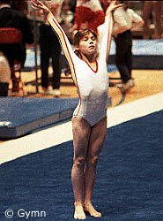

Eugenia Golea (ROM)
1987 World V Silver Medalist

Medal Total
- Olympic Games: 1 Silver
- World Championships: 1
Gold, 2 Silver
- European Championships: 1
Silver, 1 Bronze
Eugenia was born on March 10,
1969, in Bucharest. She trained at the CSS Cetate Deva club with coaches
Adrian Gorean, Adrian Stan and Maria Cosma. After leaving competitive
gymnastics, Eugenia performed for a while with a circus. She now lives in
New York and works as a coach.
Competition Results
- 1980
- Republican Championships: 2nd Team (Cat. IV)
- Romanian Sports Schools Championships: 1st AA (Cat. IV)
- 1981
- Romanian Sports Schools Championships: 2nd AA (Cat. III)
- 1982
- Romanian Cup: 3rd AA (Cat. III)
- 1983
- Jr. Romanian Championships: 1st AA, 1st V, 1st UB, 1st B
- Jr. Romanian Sports Schools Championships: 2nd AA (Cat. III)
- 1984
- American Cup: 4th AA
- Balkan Championships: 1st Team, 3rd AA
- Competition of Socialist Capitals: 2nd Team, 2nd AA, 1st UB, 2nd V, 3rd FX
- Romanian Cup: 1st AA, 1st B, 2nd V, 2nd UB, 3rd FX
-
- 1985
- Balkan Championships: 1st Team, 4th AA
- Belgian Gym Masters: 1st AA, 1st B, 1st FX, 4th UB
- FRA-ROM-SUI Tri-Meet: 1st Team, 4th AA
- HOL-ROM Dual Meet: 1st Team, 4th AA
- Hungarian International: 3rd AA, 1st FX, 2nd B, 3rd V
- Kraft International: 3rd AA, 2nd FX, 3rd V, 3rd UB, 3rd
B
Romanian Championships: 3rd AA
- World Championships: 2nd Team
-
- 1986
- Balkan Championships: 1st Team, 5th AA
- Golden Sands International: 5th AA, 1st B
- International Championships of Romania: 2nd AA, 2nd B,
3rd V
- Romanian Championships: 6th AA
-
- 1987
- DTB Cup: 2nd AA, 1st V, 1st B, 2nd FX
- European Championships: 5th AA, 2nd B, 3rd V
- Gander Memorial: 1st AA
- Moscow News: 6th AA
Riga International: 4th AA
- Romanian Championships: 2nd V
- SUI-ROM Dual Meet: 1st Team, 5th AA
- Swiss Cup: 3rd AA
- World Championships: 1st Team, 2nd V
-
- 1988
- Balkan Championships: 1st Team, 4th AA
International Championships of Romania: 2nd AA, 1st V,
1st B, 1st FX
- Olympic Games: 2nd Team
- Romanian Championships: 3rd AA, 1st V, 2nd FX, 3rd B
- SUI-ROM-CSSR Tri-Meet: 1st Team, 3rd AA
- 1989
- Romanian Championships: 6th AA
- Trofeul Semenic: 3rd AA
This page was last updated on June 08, 2026.
© Gymn Forum